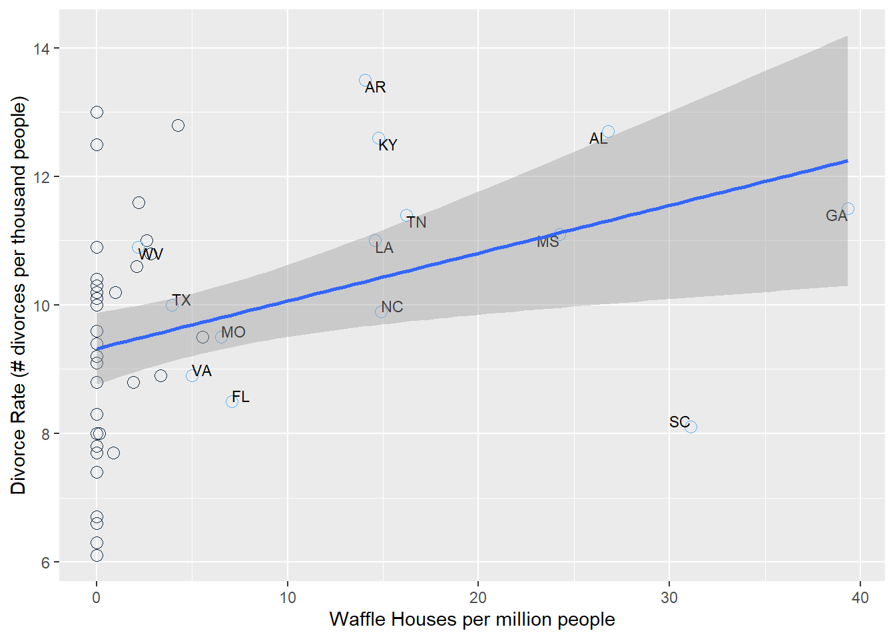

6 Common Pitfalls in Statistical Inference
Here are some easy ways to fool yourself in science and quantitative thinking.
- Spurious correlations The plot below is from real data. How do you interpret this result?
## `geom_smooth()` using formula 'y ~ x'## Warning: Removed 36 rows containing missing values (geom_text).
The figure above shows a clear positive correlation between the divorce rate and the number of Waffle Houses (McElreath 2015). In this case, it is obvious (hopefully) that Waffle Houses are probably not causing divorces. What’s going on? The states that are labeled are all in the South, where Waffle Houses are common. People also happen to get married earlier in the South, which helps to explain the higher than average divorce rates there.
Here’s another less obvious example.
library(gapminder)
data(gapminder)
gapminder %>%
filter(year == 2007) %>%
ggplot(aes(x = gdpPercap, y = lifeExp)) +
geom_point() +
scale_x_log10() +
geom_smooth(method = "lm") +
labs(x = "GDP ($ Per Capita)",
y = "Life Expectancy (years)")## `geom_smooth()` using formula 'y ~ x'
The figure above shows a positive relationship between a country’s gross domestic product (GDP) and its life expectancy in 2007. Each dot is a country. In our experience, this correlation is a common one for students to study. They often interpret the result as confirming a benefit of economic activity with how long people live, and conclude that countries can improve life-expectancy by improving economic activity. But this represents a similar fallacy as the Waffle House-Divorce example. An easy way to see this is to check death certificates. If we did that (we didn’t, but we think we’re safe here), we would probably not find a cause of death that says “Died due to low GDP”. Just like Waffle Houses are associated with “Southerness” and “Southerness” is associated with early age at marriage and early age at marriage leads to higher divorce rates, GDP is associated with its own confounding variable of health care infrastructure. That is itself a large and difficult-to-define metric, but it is closer to explaining the positive correlation between GDP and life expectancy.